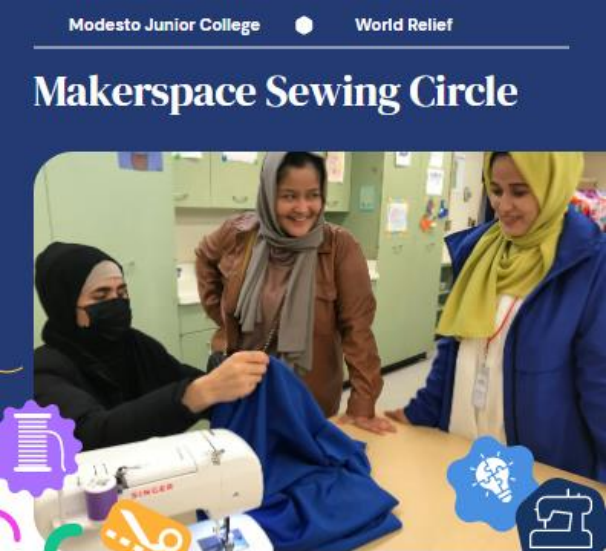

Students: To be announced
Mentors: Sarah Williams (World Relief), Ellie Gundlach (World Relief), Ruth Luman (English Language, MJC), Jeremy Wilson (Engineering, MJC) and Debbie Gilbert (English, MJC)
Problem: Since the US withdrawal from Afghanistan, Stanislaus County has become home to an up-and-coming community of Afghan women many of whom know how and love to sew but have no machines.
Solution: The World Relief bought a set of sewing machines for this purpose for a grant but had no place to set them up. When the faculty organizers of MJC’s New Innovation Center heard about this need, we saw an opportunity to use the new space in a great community partnership. We imagine that this group of women will not just practice and improve their skills but also map out future businesses and hopefully teach other MJC students to sew as well
